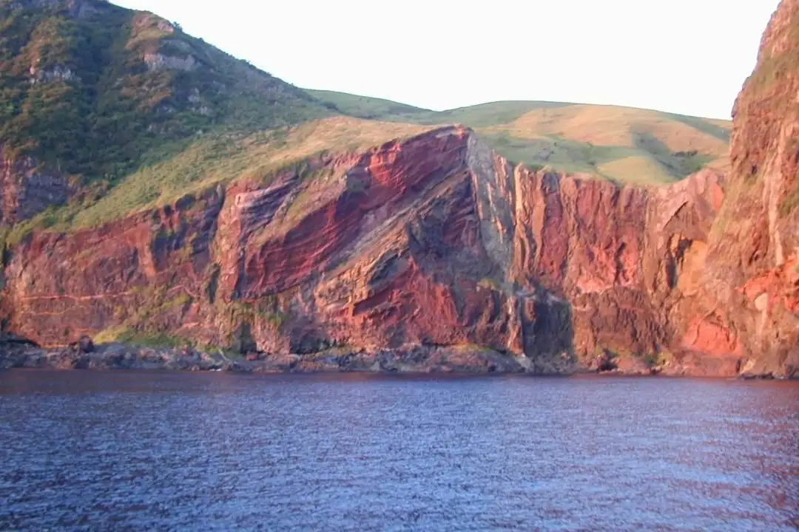
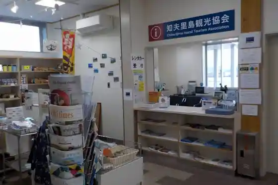
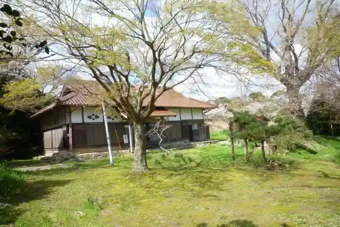

Chibu
Chibu · Shimane
Chibu
Highlighted on the Shimane map.

Sights
Sekiheki
Aka Hage Yama
Chibu Sato Shima Tourism Association

Watari Tsu Beach
Matsu Yo Tera Garden

Local History Museum
Daihatsu Jaku Kei Shuzo Ko
Chibu Town Hall